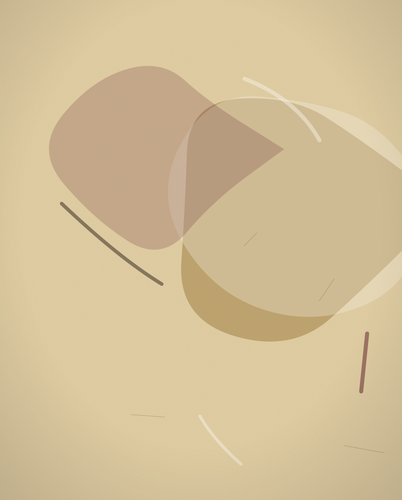
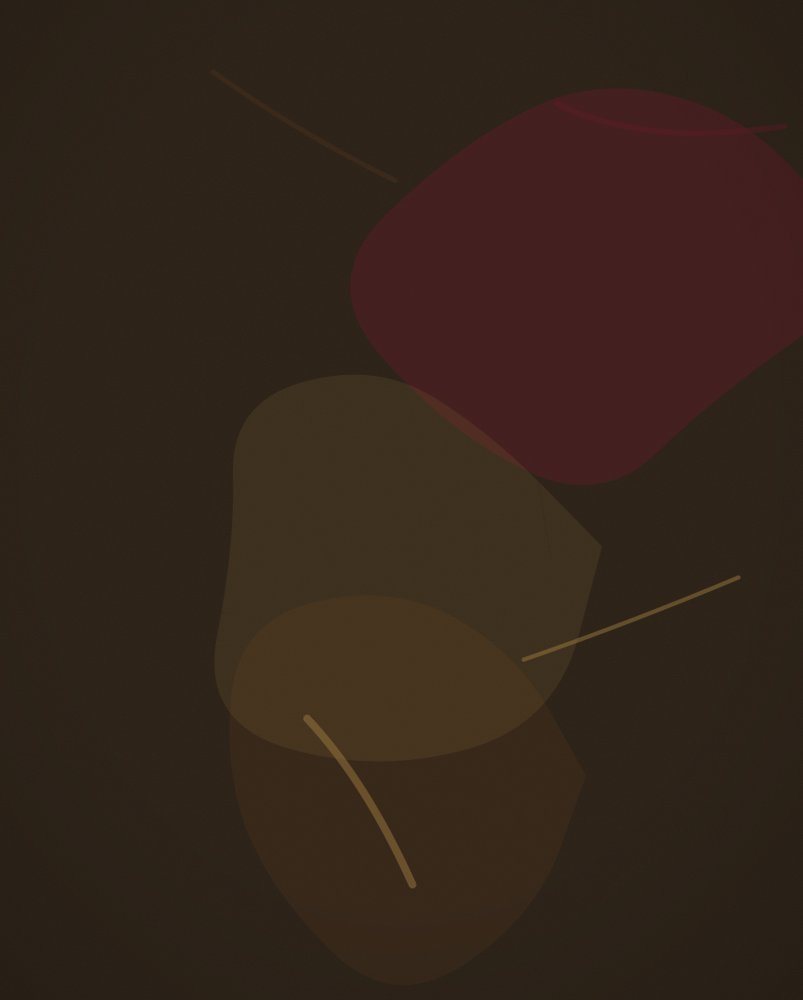
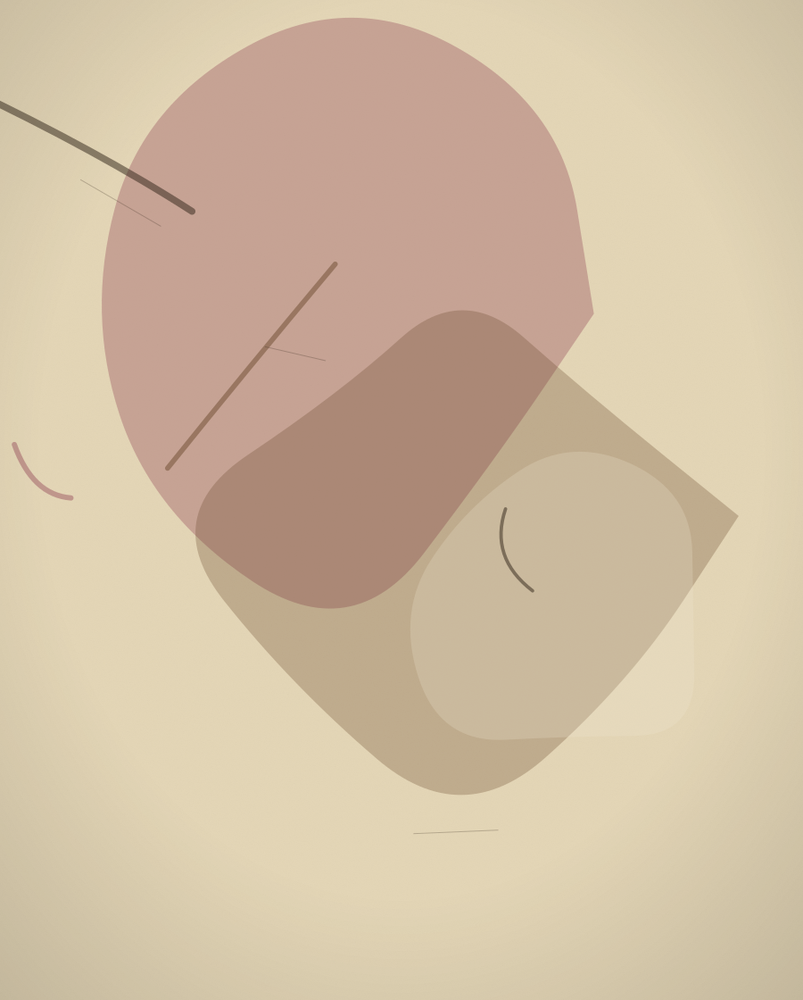
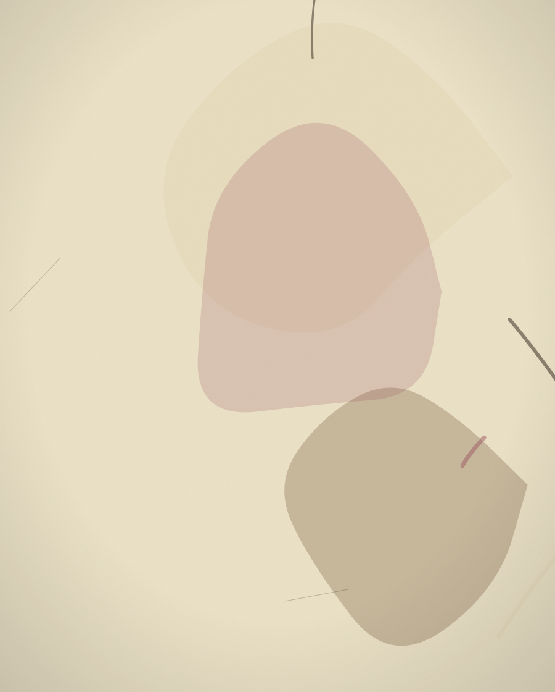
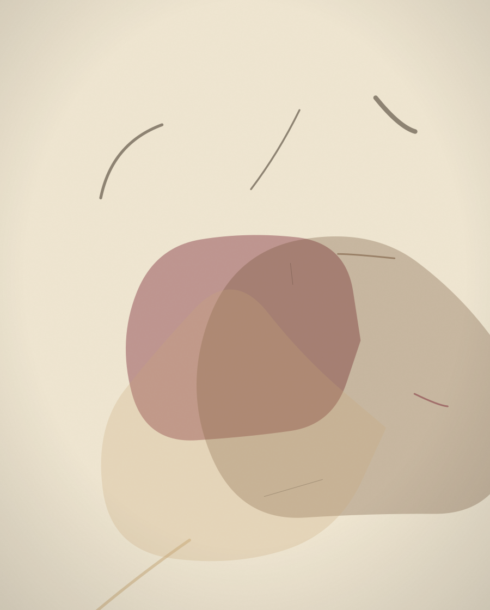

Ana Sayfa / Resimler
Arşiv — Sayfa 05Sergi Kataloğu
Küçük Bir Özel Sergi
Bu sayfa yer tutucu görsellerle hazırlanmıştır — gerçek eserler daha sonra eklenecektir. Bir görsele dokunun, büyütülmüş hâlini görün.

Fig. I — Yer Tutucu

Fig. II — Yer Tutucu

Fig. III — Yer Tutucu

Fig. IV — Yer Tutucu

Fig. V — Yer Tutucu

Fig. VI — Yer Tutucu

Fig. VII — Yer Tutucu

Fig. VIII — Yer Tutucu